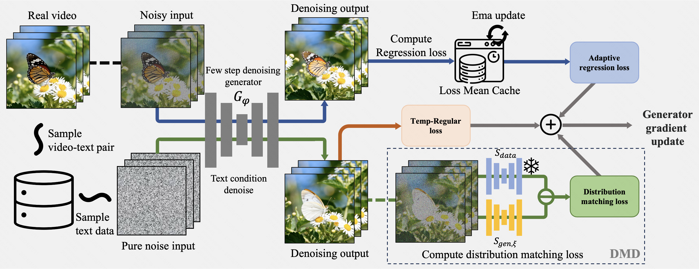
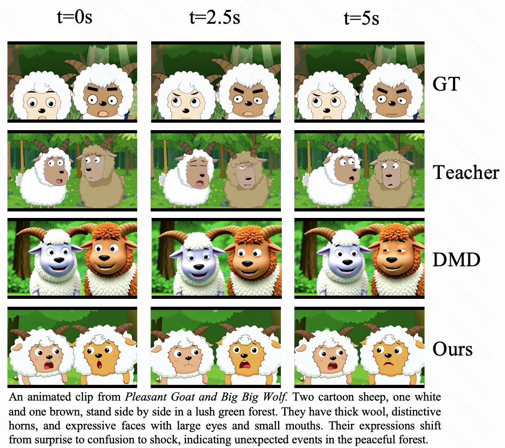

A unified framework that incorporates adaptive regression loss and temporal regularization into distribution matching distillation for high-quality, few-step video generation.
† Project Leader · ‡ Corresponding Authors
We incorporate Adaptive Regression Loss and Temporal Regularization Loss into Distribution Matching Distillation (DMD) to mitigate oversaturation and low dynamism in video tasks. Furthermore, our approach enables Supervised Fine-tuning (SFT) concurrently with distillation, facilitating effective style transfer.
High-quality video examples generated by the student model distilled from Wan2.1-T2V-1.3B using 4-step sampling with our method.
Our method distills a pre-trained teacher model sdata into a few-step video generator Gφ. The training procedure consists of the following steps:

The real datasets used during distillation enable the student model to learn new knowledge, effectively performing fine-tuning during the distillation process — unlocking seamless style transfer capabilities.

@misc{you2026adaptivevideodistillationmitigating,
title={Adaptive Video Distillation: Mitigating Oversaturation
and Temporal Collapse in Few-Step Generation},
author={Yuyang You and Yongzhi Li and Jiahui Li
and Yadong Mu and Quan Chen and Peng Jiang},
year={2026},
eprint={2603.21864},
archivePrefix={arXiv},
primaryClass={cs.CV},
url={https://arxiv.org/abs/2603.21864},
}